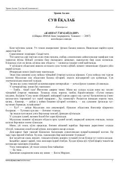

SYOta va o'g'illar o'rtasidagi munosabatlar hamda hayotiy qadriyatlar haqidagi ta'sirli kinoqissa.
Erkin Aʼzamning ushbu kinoqissasida oilaviy munosabatlar, ota va o'g'illar o'rtasidagi ziddiyatlar hamda hayotiy qadriyatlar yorqin aks ettirilgan. Asar qahramoni Bolta Mardon va uning oilasi hayoti misolida jamiyatdagi o'zgarishlar ochib beriladi.